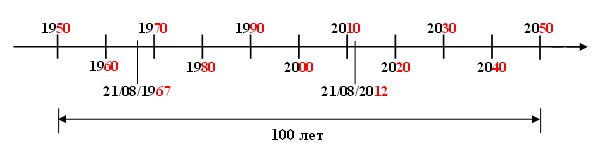

Типы данных и переменные в ABL
ABL, как и большинство других языков программирования, является строго-типизированным. Это означает, что всем данным, используемым в программе (переменные, поля таблиц), определяется их тип.
- Типы данных
- Переменные
- Переменные DECIMAL, INTEGER И INT64 типов
- Переменные DATE, DATETIME И DATETIME-TZ типов
- Переменные LOGICAL типа
- Неизвестное значение ?
- Собственный формат
- Прерывание и откат
Типы данных
Тип данных определяет допустимые значения данных, а также совокупность операций над ними. В OpenEdge существуют следующие основные типы данных:
| Тип данных | Описание | Диапазон допустимых значений |
|---|---|---|
| CHARACTER | Текстовый | Ограничен размером записи 32 килобайт |
| LONGCHAR | Текстовый | Ограничен ресурсами системы |
| DECIMAL | Вещественный | 40 знаков до "." и 10 знаков после. |
| INTEGER | Целочисленный | -216... 216 |
| INT64 | Целочисленный | -232... 232 |
| LOGICAL | Логический | True/False или Yes/No |
| DATE | Дата | 01/01/32768 до н.э. – 31/12/32767н.э. |
| DATETIME | Дата-время | Дата: 01/01/32768 до н.э. – 31/12/32767н.э. Время: 00:00:00.000 - 23.59.59.999 |
| DATETIME-TZ | Дата-время-зона | Дата: 01/01/32768 до н.э. – 31/12/32767н.э. Время: 00:00:00.000 - 23.59.59.999 Зона: -14:00 – +14:00 |
Переменные
Переменные представляют собой именованную область памяти для хранения информации. Для каждой переменной должен быть определен тип данных хранимых в ней. Обращение к переменной осуществляется по ее идентификатору (имени), указываемому при ее объявлении.
DEFINE {[[NEW [GLOBAL]] SHARED] |
[PRIVATE | PROTECTED | PUBLIC] [STATIC]}
VARIABLE variable-name {AS var-datatype
| LIKE field
| LIKE variable}
[INITIAL
{constant | {[ constant [, constant ] ... ]}}]
[LABEL string]
[FORMAT string]
[DECIMALS n]
[EXTENT constant]
[NO-UNDO]
[[NOT] CASE-SENSITIVE]
- variable-name
- идентификатор (имя) переменной;
- var-datatype
- тип данных переменной;
Идентификаторы представляют собой последовательность, которая может состоять из букв латинского алфавита, цифр и спецсимволов (@,#,$,%,*,-,_). Начинаться идентификатор должен строго с буквы. Максимально допустимая длина идентификатора составляет 32 символа.
- INITIAL constant
- определяет начальное значение переменной равное constant.
- FORMAT string
- определяет формат представления значения переменной.
- LABEL string
- определяет метку переменной.
Переменная может быть описана, подобием поля таблицы с помощью оператора LIKE field, или другой переменной LIKE variable. Объявляемая таким образом переменная принимает все атрибуты того поля или переменной, подобием которой она объявляется.
Если при объявлении переменной не были указаны ее формат и начальное значение, то они принимают значения по умолчанию согласно таблице, а значение LABEL принимается равным идентификатору переменной.
| Тип | Формат | Начальное значение по умолчанию |
|---|---|---|
| CHARACTER | "x(8)" | "" |
| LONGCHAR | "" | |
| DECIMAL | ->>,>>9.99 | 0 |
| INTEGER | ->,>>>,>>9 | 0 |
| INT64 | ->,>>>,>>9 | 0 |
| LOGICAL | YES/NO | NO |
| DATE | 99/99/99 | ? (неизвестное значение) |
| DATETIME | 99/99/9999 HH:MM:SS.SSS | ? (неизвестное значение) |
| DATETIME-TZ | 99/99/9999 HH:MM:SS.SSS+HH:MM | ? (неизвестное значение) |
- EXTENT constant
- определяет переменную, как одномерный массив размера constant.
Стоит заметить, что в ABL возможно объявление исключительно только одномерных массивов.
Начальные значения элементов массива могут быть заданы с помощью опции INITIAL, в которой указывается список значений элементов массива с разделителем запятая. Порядковый номер каждого значения в списке соответствует порядковому номеру элемента массива, которому оно присваивается. Следовательно, количество элементов в списке не может превышать размер массива.
Обращение к элементам массива осуществляется по имени переменной и порядковому номеру, указываемому в квадратных скобках:
variable-name[i]
DEF VAR vWeek AS CHAR
EXTENT 7
INITIAL ["Пн","Вт","Ср","Чт","Пт","Сб","Вс"]
NO-UNDO.
DISPLAY vWeek[3].
Нумерация элементов массива, в отличии от некоторых других языков программирования, начинается с единицы, а не с нуля.
Аналогичным образом осуществляется присвоение и изменение значений элементов массива:
DEF VAR vWeek AS CHAR EXTENT 7.
vWeek[1] = "Пн".
vWeek[2] = "Вт".
...
Переменные DECIMAL, INTEGER И INT64 типов
Числовое значение в OpenEdge может быть представлено в европейском или американском форматах. Данное представление определяется стартовым параметром -E для европейского представления числа, а в случае отсутствия указания данного параметра американским форматом.
Американский формат представления числа: 1,234,567.89
Европейский формат представления числа: 1.234.567,89
Данное представление может быть изменено в рамках сессии с помощью атрибута сессии NUMERIC-FORMAT.
DEF VAR vNum AS DECIMAL INIT 12345.67.
SESSION:NUMERIC-FORMAT = "AMERICAN".
DISPLAY vNum.
Результат: 12,345.67
DEF VAR vNum AS DECIMAL INIT 12345.67.
SESSION:NUMERIC-FORMAT = "EUROPEAN".
DISPLAY vNum.
Результат: 12.345,67
Аналогично представление для целочисленных значений:
DEF VAR vNum AS INTEGER INIT 12345.
SESSION:NUMERIC-FORMAT = "AMERICAN".
DISPLAY vNum.
Результат: 12,345
DEF VAR vNum AS INTEGER INIT 12345.
SESSION:NUMERIC-FORMAT = "EUROPEAN".
DISPLAY vNum.
Результат: 12.345
Указать количество знаков после запятой переменной DECIMAL типа можно не только с помощью соответствующего формата, но и с помощью атрибута DECIMALS n, где n – количество знаков.
DEF VAR dMoney AS DEC FORMAT ">>9.999" NO-UNDO.
DEF VAR dMoney AS DEC DECIMALS 3 NO-UNDO.
Разделитель дробной и целой части в указании формата всегда - точка, независимо от европейского или американского представления числа.
С помощью указания формата возможно отключение разбиение на разряды существующее по умолчанию:
DEF VAR iCount AS INTEGER NO-UNDO.
iCount = 12000001.
DISPL iCount.
Результат: 12,000,001
DEF VAR iCount AS INTEGER FORMAT "99999999" NO-UNDO.
iCount = 12000001.
DISPL iCount.
Результат: 12000001
В случае если переменной INTEGER типа присваивается дробное значение, результатом будет являться округленное до целого присваиваемое значение.
DEF VAR i AS INTEGER NO-UNDO.
i = 34.6.
DISPLAY i.
Результат: 35
Переменные DATE, DATETIME И DATETIME-TZ типов
Формат представления дат в OpenEdge определяется форматом указываемом в стартовом параметре -d. Формат даты определенный параметром -d влияет исключительно на отображение дат, запись даты в базу данных, или в память при присвоении переменной, независимо от этого, всегда будет осуществляться в формате mm/dd/yy.
В рамках сессии формат представления последовательности следования день/месяц/год в датах может быть изменен с помощью атрибута сессии DATE-FORMAT.
Для установки последовательности для текущей сессии год,месяц,день:
SESSION:DATE-FORMAT = "YMD".
С помощью атрибута переменной FORMAT можно задавать разделитель и число символов в представлении года.
DEF VAR dBeg-date AS DATE FORMAT "99-99-99".
DEF VAR dEnd-date AS DATE FORMAT "99-99-9999".
Представление года четырехзначным значением определяется параметром -yy. В данном параметре указывается начальное четырехзначное значение года от которого осуществляется отсчет столетнего периода в рамках которого осуществляется определение четырехзначного значения года соответствующего указанному двузначному значению.
В рамках сессии начальное значение года может быть изменено с помощью атрибута сессии YEAR-OFFSET
DEF VAR vDate AS DATE FORMAT "99/99/9999" NO-UNDO.
SESSION:YEAR-OFFSET = 1950.
vDate = 08/21/67.
DISPL vDate.
Результат: 21/08/1967
DEF VAR vDate AS DATE FORMAT "99/99/9999" NO-UNDO.
SESSION:YEAR-OFFSET = 1950.
vDate = 08/21/12.
DISPL vDate.
Результат: 21/08/2012
В ABL существует два типа данных дата-время: DATETIME и DATETIME-TZ. Формат дата-время DATETIME состоит из двух частей - это дата и время. DATETIME-TZ в сравнении с DATETIME содержит еще смещение времени временной зоны.
DEF VAR vDateTime AS DATETIME NO-UNDO.
vDateTime = NOW.
DISPL vDateTime.
Результат: 05/07/2013 16:05:24.315
DEF VAR vDateTime AS DATETIME-TZ NO-UNDO.
vDateTime = NOW.
DISPL vDateTime.
Результат: 05/07/2013 16:05:24.315+04:00
Возможны следующие форматы представления части содержащей время:
"HH"
"HH:MM"
"HH:MM:SS"
"HH:MM:SS.SSS"
"HH:MM:SS.SSS AM"
"HH:MM:SS.SSS+HH:MM"
"HH:MM:SS.SSS AM+HH:MM"
При наличии в формате времени "A" или "a" время будет выводиться в формате 12 часов, в противном случае в формате 24 часа.
Переменные LOGICAL типа
Переменные LOGICAL типа могут принимать три значения: TRUE (ИСТИНА), FALSE(ЛОЖЬ) и неизвестное значение - ?.
С помощь формата LOGICAL переменной можно трансформировать представление (отображение) значений TRUE/FALSE в иные схожие значения, например определяющие пол M/F (М/Ж).
DEF VAR vLog AS LOGICAL FORMAT "M/F" NO-UNDO.
vLog = TRUE.
DISPL vLog.
Результат: M
Формат переменной LOGICAL представляет собой два значения, разделенных символом "/". Первое значение в формате соответствует значению TRUE, второе - значению FALSE.
Неизвестное значение ?
Неизвестное значение применяется для указания пустого значения. Если в базе данных у ряда записей поле дата (например, с именем fDate) просто отсутствует (не заполнено) и мы хотим отобрать такие записи, то сравнение fDate = "" вызовет ошибку несовместимости типов, так как таким образом мы как бы сравниваем тип DATE с типом CHARACTER. Поэтому, для указания пустого значения применяется неизвестное значение ?, являющееся аналогом значения null в других языках программирования. Выражение fDate = ? уже не будет вызывать подобной ошибки.
Собственный формат
Помимо стандартных форматов, переменной любого типа может быть задан формат созданный самим разработчиком:
DEF VAR cMoney AS DEC FORMAT "$ >>>9.99 USD" NO-UNDO.
cMoney = 123.78.
DISPL cMoney.
Результат $ 123.78 USD
Прерывание и откат
Если при выполнении какого-либо программного блока, в котором некой переменной присваивалось новое значение, произойдет прерывание, вызванное либо сбоем, либо действиями пользователя, то по умолчанию произойдет откат значения данной переменной на предыдущее, т.е. новое присвоение значения не произойдет. За данное действие отвечает параметр UNDO. Согласно ProgressCodingStandardsManual автор chris@fast4gl.com" Schreiber Fast 4gl systems, inc., все переменные должны быть объявлены как NO-UNDO (отменяющему откат значения переменной в случае прерывания). Согласно той же статье при выборе идентификатора переменной следует пользоваться префиксами и суффиксами для отличия идентификаторов переменных от идентификаторов полей баз данных. При объявлении переменной как подобие поля базы данных (LIKE), в идентификаторе переменной должно звучать наименование поля подобием которого является данная переменная.